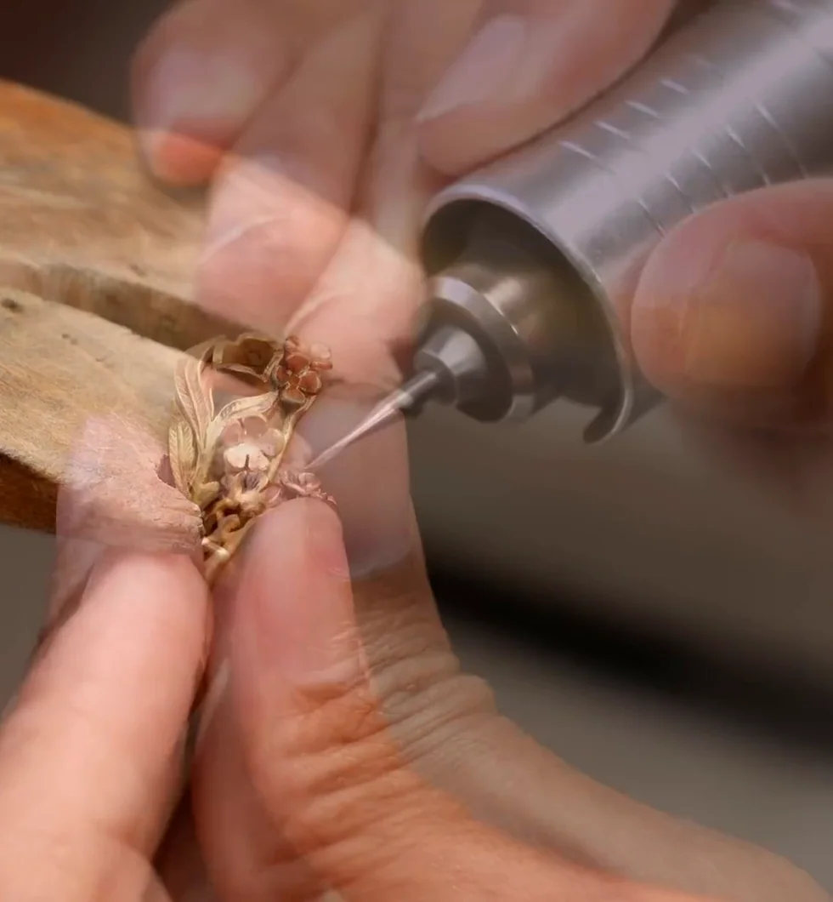
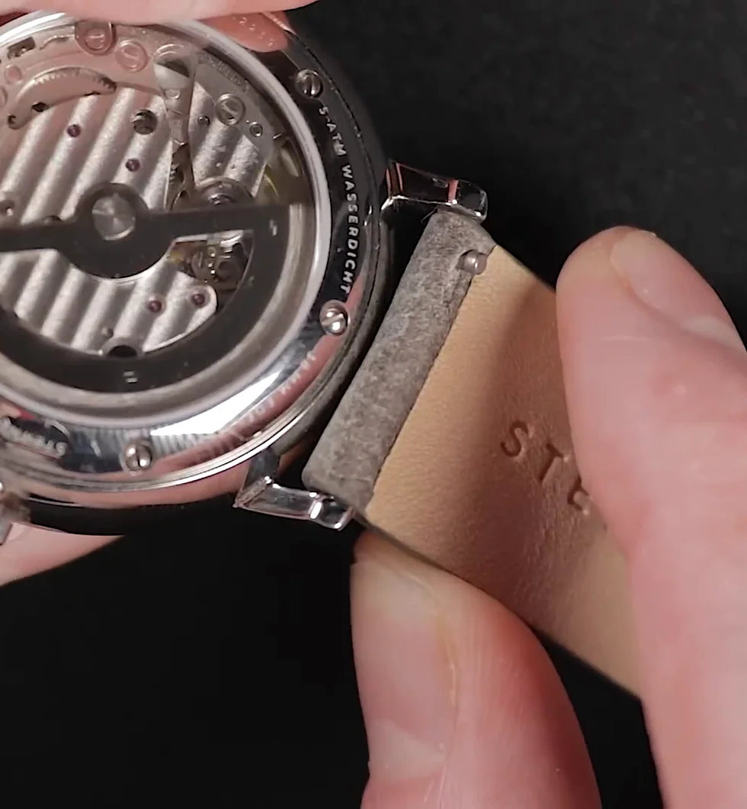
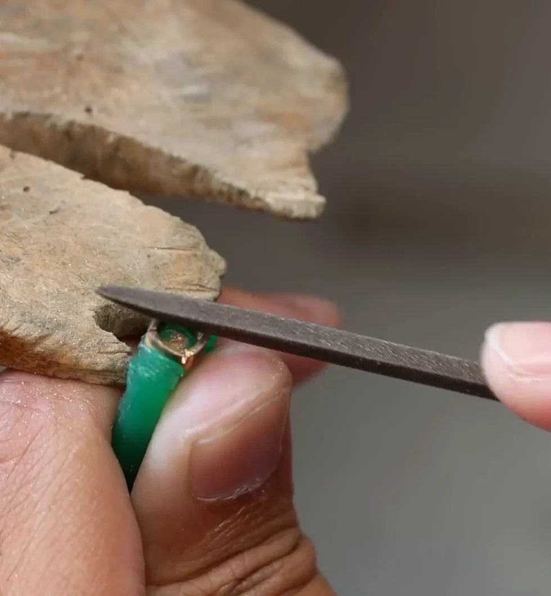
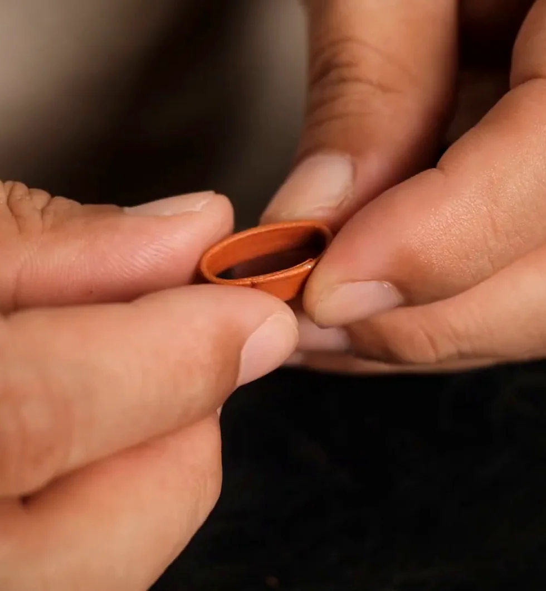

Considered proportions
The curve of a ring and the profile of a case should feel as good as they look.
From the setting of a ring to the details of a watch and the feel of stitched leather, we believe the smallest decisions often matter most.

We pay attention to the things you notice over time: the balance of a ring, the line of a watch case, and the way a leather strap sits on the wrist.
Some pieces are chosen as they are. Others begin with a conversation. Either way, the aim is the same: something considered, personal and worth keeping.
The curve of a ring and the profile of a case should feel as good as they look.
Metal, stone and leather each have their own weight, texture and way of catching the light.
From a stone setting to a dial or a line of stitching, it is the details that make a piece yours.
A watch is more than its dial. The case, the movement and the way a strap meets the lugs all shape how it looks and feels in the hand.
EXPLORE BESPOKE WATCHES
Each piece begins with a question: what should it mean, and how should it feel?
A moment, a reference or simply a detail you cannot stop thinking about.
Considering stone, metal, dial and leather for the character you want.
Careful setting, fitting and stitching bring the smallest parts together.
The finishing details are what make the completed piece feel right.


Three short studies in precision: jewellery at the bench, the details of a timepiece, and leather finished by hand.